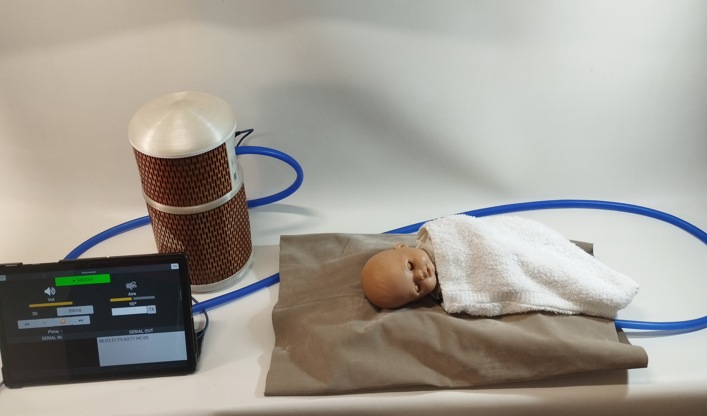
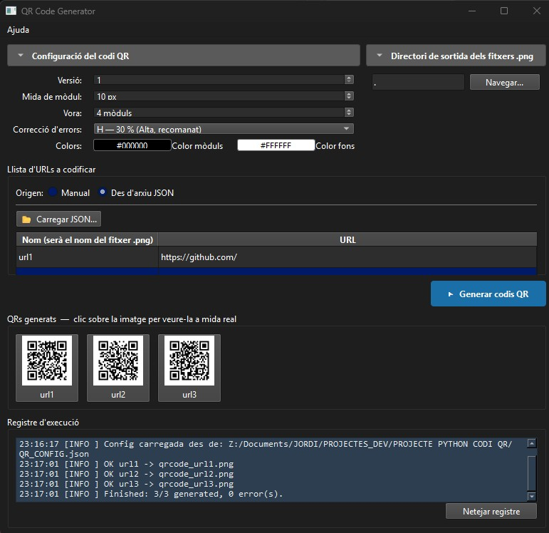

Enginyer Industrial · Inventor · Developer
Enginyer Industrial amb +25 anys d'experiència en R+D (electrònica i informàtica) i Sistemes de Gestió.
Developer Python especialitzat en l'automatització de processos interns de l'empresa.
Inventor del NeoNiu, simulador biomimètic del mètode cangur per a nadons prematurs amb Model d'Utilitat registrat.

Simulador biomimètic del mètode cangur per millorar el benestar dels nadons prematurs en incubadora. Replica la respiració i els batecs dels pares a través d'un circuit tancat d'aire, sense cap component electrònic prop del nadó.

Eina Python per generar codis QR en lots a partir d'un fitxer JSON de configuració. Interfície gràfica (PySide6) i CLI. Sense serveis externs, sense caducitat d'enllaços ni rastrejament.
Formació especialitzada en Python aplicat a l'automatització de processos, scripting i anàlisi de dades.
Gestió i desenvolupament de projectes tècnics orientats a producte industrial.
Titulació de base amb especialització en circuits electrònics, sistemes de control i disseny de producte.